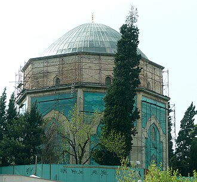

تعارف
La Mosquée verte, est une mosquée située à Bursa (Brousse), en Turquie, ancienne capitale de l'Empire ottoman avant la prise de Constantinople en 1453. Également connue comme la mosquée de Mehmed Ier, la Mosquée verte fait partie d'un vaste complexe religieux (külliye).
الجامع الأخضر بمدينة بورصة في تركيا ، واسمه في تركيا «يشيل جامع» ويُعرف أيضاً باسم «جامع السلطان محمد الأول (چلبي)» الذي أنشأ هذا المسجد بعد أن وَحَّدَ الدولة العثمانية عقب الحروب الأهلية التي تلت موت أبيه السلطان بايزيد الأول في الأسر والتي استمرت 11 عاما. بعد وفاة السلطان محمد الأول (جلبي)، قام ابنه السلطان مراد الثاني بإكمال بناء الجامع.
The Green Mosque, also known as the Mosque of Mehmed I, is a part of a larger complex in eastern Bursa, Turkey, the former capital of the Ottoman Turks before Constantinople was captured in 1453. The complex consists of a mosque, a mausoleum known as the Green Tomb, a madrasa, a public kitchen, and a bathhouse. The name Green Mosque comes from its green and blue interior tile decorations. It is part of the historic UNESCO World Heritage Site.
Yeşil Cami, Bursa'da erken dönem Osmanlı mimarisinin önemli örnekleri arasında yer alan bir tarihi yapıdır.
Masjid Hijau Bursa atau lebih dikenal dengan Masjid Sultan Mehmed I adalah sebuah kompleks masjid bersejarah peninggalan Kesultanan Utsmaniyah yang berada di kota Bursa, Provinsi Bursa, Turki. Kompleks masjid ini terdiri dari masjid, türbe, madrasah, dapur umum, dan kamar mandi. Sejak tahun 2014, bangunan masjid ini sempat menjadi bagian dari Situs Warisan Dunia UNESCO.
Die Grüne Moschee, ausgesprochen [jeʃil d͡ʒami], ist eine der drei großen Moscheen in Bursa. Sie gilt als Meisterwerk der frühosmanischen Architektur und ist Ausgangspunkt einer Reihe im Bursa-Stil errichteter Moscheen. Sie wurde im 15. Jahrhundert vom Architekten Pascha Haci İvaz im Auftrag des Sultan Mehmeds I. aus Stein und Marmor errichtet. Die Wände des in umgekehrter T-Form ausgeführten Baus sind mit grünen Kacheln verkleidet, was ihr den Namen gab. Bei Restaurierungsarbeiten im Jahre 1950 fand man darüber hinaus noch kostbare Deckenmalereien. Die Verzierungen an Fenstern, Portal und Fassaden zeugen von der großen Kunstfertigkeit der Steinmetze dieser Zeit.
La Mezquita Verde, también conocida como Mezquita de Mehmed I, forma parte de un complejo mayor situado en la parte oriental de Bursa, Turquía, antigua capital otomana, antes de la caída de Constantinopla en 1453. El complejo consta de una mezquita, un mausoleo conocido como Mausoleo Verde, una madrasa, una imaret y un baño. El nombre de Mezquita Verde procede de la decoración interior de azulejos verdes y azules. Corresponde al periodo de la arquitectura otomana temprana y su construcción fue supervisada por el arquitecto y mecenas, el visir Hacı İvaz Pasha, que había sido comandante bajo Mehmed I.
De Yeşil Camii of Groene Moskee is een 14e-eeuwse moskee in de Turkse stad Bursa. Het gebouw bevindt zich naast het achthoekige mausoleum of türbe van de Ottomaanse leider Mehmet I.
绿色清真寺 是土耳其布尔萨一个大型库里耶建筑群的一部分，包括清真寺、学校、墓地、厨房、浴室等。布尔萨是奥斯曼帝国在1453年征服君士坦丁堡之前的旧都。
Зелёная мечеть — турецкая мечеть в Бурсе, построенная в XV веке. Мечеть является частью комплекса, включающего в себя также усыпальницу, медресе и богадельню. Зелёная Мечеть — самая декорированная мечеть Бурсы. Фасад сделан из белого мрамора, а молитвенный зал облицован великолепным зелёным фаянсом. Резьба по мрамору, украшающая центральный портал и окна, принадлежит к шедеврам османского искусства. В помещении перед главным залом, увенчанном двумя куполами, находится бассейн с мраморным фонтаном. Стены внутренних помещений мечети украшены изразцами синего, зелёного, голубого, бирюзового и лазурного цветов, перемежающихся белыми буквами арабской вязи.
نقشے پر
دستاویزات اور لنکس
- Wikipédia — Français
- Wikipédia — العربية
- Wikipédia — English
- Wikipédia — Türkçe
- Wikipédia — Bahasa Indonesia
- Wikipédia — اردو
- Wikipédia — Deutsch
- Wikipédia — Español
- Wikipédia — Nederlands
- Wikipédia — 中文
- Wikipédia — Русский
- Wikidata — Q1549086
ڈیٹا: Wikidata (CC0)، ہر 3 ماہ بعد تازہ کیا جاتا ہے۔ سال عمارت کی معلوم قدیم ترین تاریخِ تعمیر ہے: جو عمارت بعد میں مسجد بنی (جیسے آیا صوفیہ)، اس کے لیے اصل عمارت کا سال دیا گیا ہے۔ تصاویر: Wikimedia Commons، ہر تصویر کے صفحے پر مصنف اور لائسنس۔